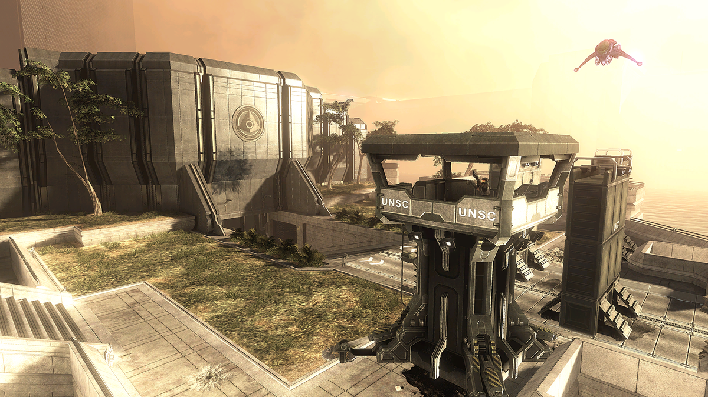
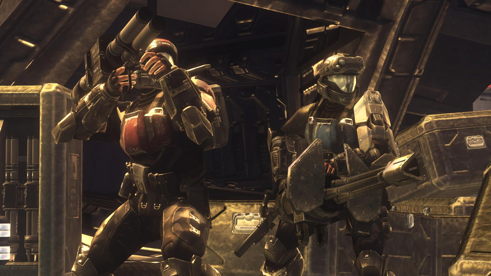

Halo 3: ODST - Los Soldados de las Sombras
Introducción
Halo 3: ODST (2009) ofrece una experiencia única en la saga Halo, poniéndote en la armadura de un soldado Orbital Drop Shock Trooper (ODST) durante la caída de Nueva Mombasa. Con una narrativa no lineal, ambiente noir y un enfoque más táctico y vulnerable, el juego explora los eventos paralelos a Halo 2 desde la perspectiva de los soldados de élite humanos.
Protagonizado por "The Rookie", un ODST mudo, el juego combina exploración atmosférica en una ciudad nocturna con intensas misiones de flashback que revelan el destino del Equipo Alpha-Nine.
Misiones Principales
Prepare to Drop
Introducción cinemática donde el Equipo Alpha-Nine se lanza desde la nave Say My Name hacia Nueva Mombasa, justo cuando el Profeta del Arrepentimiento hace un salto espacial, causando una onda de choque que dispersa a los ODST.
Mombasa Streets
El Rookie explora las calles nocturnas de Nueva Mombasa en busca de pistas sobre sus compañeros. Esta misión abierta introduce el modo "Visor VISR" y los registros de audio ocultos.
Tayari Plaza
Flashback donde Buck y Romeo investigan una instalación de ONI. Notable por los combates en interiores y la primera aparición de los nuevos enemigos "Brute Stalkers".
Uplift Reserve
Dutch y Mickey defienden una estación de comunicaciones en las afueras de la ciudad. Incluye intensos combates con Wraiths y el uso del nuevo vehículo Cobra.
Kizingo Boulevard
Buck y Dare se infiltran en un edificio de ONI para recuperar datos cruciales. Muestra el lado más sigiloso del juego con secciones de combate limitado.
ONI Alpha Site
El equipo completo asalta una instalación ONI para recuperar a Vergil, una inteligencia artificial. Combates épicos con los nuevos enemigos "Engineers".
NMPD HQ
El clímax del juego donde los ODST defienden la comisaría de policía contra oleadas Covenant. Presenta el nuevo vehículo Phantom jugable en la saga.
Equipo Alpha-Nine
| Personaje | Rol | Características | Imagen |
|---|---|---|---|
| The Rookie | Protagonista | ODST mudo cuyo viaje conecta todas las historias | |
| Buck (Edward Buck) | Líder del equipo | Veterano sarcástico interpretado por Nathan Fillion | .png) |
| Dutch (Kojo Agu) | Especialista en armas pesadas | El más fuerte del equipo, experto en explosivos | .png) |
| Romeo (Michael Crespo) | Francotirador | Bravucón y seguro de sí mismo, experto en rifles | .png) |
| Mickey (Mickey Crespo) | Ingeniero y conductor | El más joven del equipo, experto en vehículos | .png) |
| Dare (Veronica Dare) | Oficial de ONI | Contacto del equipo y antigua relación con Buck | .png) |
Nuevas Mecánicas y Características
Visor VISR (Nuevo)
Sistema de visión nocturna que resalta enemigos, aliados y objetos en amarillo/verde. Incluye mapa y datos vitales en el HUD.
Pistola Silenciada M7S (Exclusiva)
Versión silenciada de la SMG con mira integrada. Ideal para combate sigiloso.
Rifle de Precisión ODST (Exclusivo)
Rifle de francotirador automático con menor potencia pero mayor cadencia que el SRS99.
Vehículo Cobra (Nuevo)
Artillería autopropulsada con cañones de plasma. Efectivo contra vehículos pesados.
Sistema de Salud (Cambiado)
Los ODST no tienen escudos, solo salud que no se regenera completamente. Similar al sistema de Halo: CE.
Registros de Audio (Nuevo)
30 grabaciones ocultas que expanden la historia de Nueva Mombasa y sus habitantes.
Registros de Audio (Audio Logs)
La Historia de Sadie
Los 30 registros de audio cuentan la historia paralela de Sadie Endesha, una civil atrapada en Nueva Mombasa durante la invasión Covenant:
- Revelan la vida en la ciudad antes y durante el ataque
- Muestran la perspectiva civil de la guerra
- Conectan con personajes secundarios como el Superintendente
- Desbloquean el logro "Endure" al encontrarlos todos
Encontrar todos los registros completa la comprensión de la narrativa del juego.
Calaveras (Skulls)
Modificadores de Juego en ODST
Las calaveras en Halo 3: ODST ofrecen modificadores únicos que alteran la experiencia:
Efectos de las Calaveras
- Blind: Oculta el HUD y la mira
- Boom: Explosiones más grandes al morir
- Catch: Enemigos lanzan más granadas
- Fog: Desactiva el sensor de movimiento
- Grunt Birthday Party: Grunts explotan en confeti con disparos en la cabeza
- Iron: Muerte permanente (reinicio de nivel)
- Black Eye: Salud solo se recupera con daño cuerpo a cuerpo
- Mythic: Enemigos tienen el doble de salud
- IWHBYD: Activa diálogos raros y divertidos
Encontrar estas calaveras requiere exploración exhaustiva de los niveles, con algunas escondidas en lugares casi inaccesibles.
Las calaveras añaden replay value y permiten personalizar la experiencia para mayor desafío.
Legado de Halo 3: ODST
Halo 3: ODST se destaca en la saga por sus innovaciones únicas:
- Narrativa noir: Estilo cinematográfico único con elementos de cine negro
- Protagonista mudo: El Rookie permite mayor inmersión del jugador
- Firefight: Introdujo el modo horda cooperativo a la saga
- Banda sonora: Partitura jazzística única de Martin O'Donnell
- Mundo abierto: Primera incursión en diseño no lineal para la campaña
- Perspectiva única: Muestra la guerra desde la vista de soldados regulares
Aunque inicialmente planeado como expansión, ODST se convirtió en un juego completo que vendió más de 6 millones de copias. Su modo Firefight y su atmósfera única mantienen una comunidad activa hasta hoy.
Firefight: El Legado Multijugador
ODST introdujo el modo Firefight, un precursor de los modos horda modernos:
- Olas progresivamente difíciles de enemigos Covenant
- Sistema de vidas compartidas entre el equipo
- Variantes de juego con diferentes reglas
- Compatibilidad para 4 jugadores en cooperativo
- Mapas que aprovechan escenarios de la campaña
Este modo se convertiría en un pilar de la franquicia, apareciendo en futuras entregas como Reach y Halo 5.